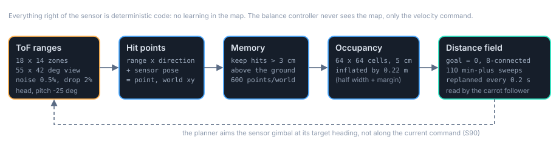
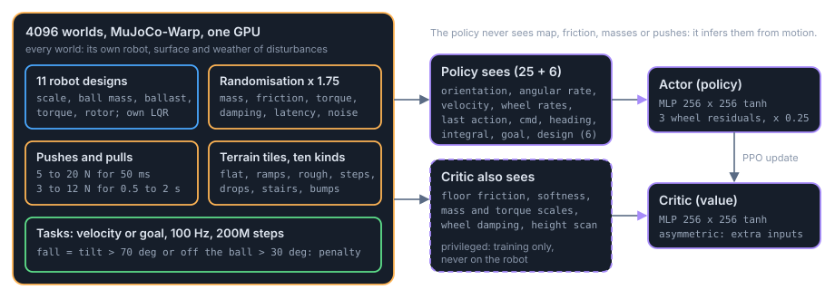

How the whole stack fits together
One diagram of the stack, then four you can click: control, sensing, training, evaluation. Simulation only.
In short
- Layers above, balance below. A goal layer and a motion-reference layer make a smooth velocity command. The balance controller never sees the map.
- LQR plus a bounded residual. applied = clip(aLQR + α apolicy), with α 0.15 while cruising and 0.3 when manoeuvring (S112).
- Three passive arrestors keep the body on the ball (S79).
- Trained on 4096 GPU worlds, 11 robot designs, randomised physics, pushes and pulls.
- One evaluation protocol for every controller: three randomisation scales, with and without disturbances, three seeds.
g39_goalcentre_s0LQR base + PPO residual (authority 0.25, adaptive 0.15 to 0.3), motion-reference layer, goal logic on the true ball centre, 11 designs. S121. How it got hereFrom a goal to wheel torques
A navigator says where to go and how fast. An athlete keeps the robot upright and tracks that speed. A cage of rollers stops the athlete slipping off the ball. Read left to right.

Tap a block for its details. On a phone the stack is drawn top to bottom.
How the pieces talk, step by step
- Goal to command. Every 10 ms the navigation layer outputs a planar velocity (direction and speed). Without a map it is simply the direction to the goal at min(0.3 m/s, 1.5 × distance), Froude-scaled for the design. With a map it is the carrot follower's smooth command (physics page, section 9).
- Command to two actions. The LQR passes the command through its governor and integral and computes a wheel action from the measured tilt, rates and ball rate. In parallel the policy, an MLP, maps 25 observation values and the design vector to a residual action.
- Sum and clip. applied = clip(aLQR + 0.25 apolicy). The LQR always keeps at least three quarters of the say. With adaptive authority the factor is 0.15 while cruising and rises to 0.3 for about half a second when the command changes fast, nears zero or the body tilts beyond 4 degrees (S112).
- Torques and physics. The three normalised commands become torques at the wheel limit and the GPU simulator advances the robot. The new state is read back: the LQR sees tilt, rates, ball rate and velocity; the policy sees the same plus its command, heading, velocity integral and goal.
g18_ret_rs025 checkpoints (S83, S84). The arrestors added about 0.15 of that success before any retraining (S79, S80).From ranges to a map the planner can descend
The sensor returns a grid of distances. Five fixed steps turn them into a field the planner can follow. None is learned, and the balance controller receives none of them.

Tap a block for its details.
What was measured, same planner and controller throughout
| Hazard source | reached goal | falls | rolled onto a block |
|---|---|---|---|
| blind (straight to the goal) | 0.09 | 0.91 | 0.74 |
| perfect map, jerky wavefront planner | 0.91 | 0.09 | 0.00 |
| ToF 18×14 on the head, jerky planner | 0.85 | 0.11 | 0.02 |
| ToF 18×14, smooth follower, sensor along the command | 0.72 | 0.22 | 0.16 |
| ToF 18×14, smooth follower, sensor aimed at the planner target | 0.78 | 0.16 | 0.03 |
| two ToF on the body cones (worst mount) | 0.58 | 0.35 | 0.25 |
| perfect map, with pushes and pulls | 0.55 to 0.58 | 0.41 to 0.44 | 0.13 to 0.20 |
528 worlds (48 per design, 11 designs), 20 s episodes, randomisation scale 1, observation noise on, undisturbed unless stated, frozen balance controller g18_ret_rs025_s1 (one seed), MuJoCo-Warp GPU. Source: tracking_study_log.md S89, S90, S91
4096 robots, each in its own slightly different world
Thousands of simulated robots train at once. Each has a different body, friction, pushes and ground, so the policy cannot memorise one robot. A critic that sees more than the policy speeds up learning and is thrown away afterwards.

Tap a block for its details.
What the policy sees, and does not see
The policy sees
- body orientation (rotation vector) and angular velocity
- linear velocity and the three wheel rates
- its previous applied action
- the command, its heading as sine and cosine, the integrated velocity error
- the goal direction, distance and flag
- a 6-value description of which robot design it is driving
25 + 6 values at 100 Hz, with sensor noise. All available on a real robot.
The policy does not see
- the terrain or any map
- the floor friction or softness
- the masses, torque scale or damping drawn this episode
- when or how hard it is being pushed
- the LQR's own action (it only feels its effect)
It must infer all of this from how the robot moves.
Only the critic sees
- floor friction and softness
- mass and torque scales, wheel damping
- a height scan of the ground ahead
- the design vector
Privileged, training only. Discarded after training.
| Ingredient | Setting | Why |
|---|---|---|
| Worlds | 4096, MuJoCo-Warp float32, 100 Hz | enough variety per update to average over designs, surfaces and pushes |
| Designs | 11, each with its own LQR | a single policy for a family of bodies; design vector tells it which |
| Randomisation | scale 1.75: mass, friction, torque, damping, latency, noise | robustness to model error; evaluated at 1, 1.75 and 2.5 |
| Pushes | 5 to 20 N for 50 ms, every 2 to 4 s, scaled with weight | impulsive disturbances |
| Pulls | 3 to 12 N for 0.5 to 2 s, every 4 to 10 s | sustained disturbances; present in 58 percent of disturbed falls before the arrestors (S79) |
| Arrestors | 3 rollers, 8 mm, 100 deg, zero gap | the body stays on the ball; trained and evaluated with them |
| Authority | 0.25; now adaptive 0.15 / 0.3 with a goal dead band | 0.25 is the measured knee between tracking and robustness (S83); adaptive authority gave the fewest falls at goals and in the battery of any variant (S112, S113) |
| Motion layer | commands shaped by motion_ref.py in training and at run time, half of the velocity commands curving | bolted on to an unchanged policy it made arrival worse (S106); trained with, it costs nothing and improves arrival and hold (S110, S111) |
| Steps | 200M | 400M gave no gain (S84); for the current recipe 400M trades terrain goals for flat arrival and brings back goal hunting (S115) |
Sources: train_dev.py BRIEF fact sheet tracking_study_log.md S79, S83, S84, S106, S110 to S115
One protocol for every controller
Every frozen controller runs through the same cells. Every setting is written into the file name. Some terrain and designs are never trained on.

Tap a block for its details.
Headline numbers: the recommended controller against its predecessors
| Test | recommended: g39_goalcentre (S121) | g34: same recipe, goal logic at the ball body origin | LQR + residual 0.25, arrestors | same, no arrestors | pure learning |
|---|---|---|---|---|---|
| flat tracking, achieved / command up to 0.9 m/s | 0.94 to 1.06 | 0.96 to 1.06 | 0.99 to 1.01 | 0.96 to 1.00 | 0.54 to 0.66 |
| goal success, undisturbed | 0.73 to 0.77 | 0.77 to 0.79 | 0.71 to 0.76 | 0.58 to 0.60 | 0.44 to 0.51 |
| goal success, pushes and pulls | 0.49 to 0.50 | 0.51 to 0.52 | 0.42 to 0.44 | 0.29 to 0.30 | 0.26 to 0.27 |
| held-out 1.5x robot, goal success | not measured | not measured | 0.61 to 0.71 | 0.09 to 0.15 |
Engine: MuJoCo-Warp float32 GPU. Randomisation and observation noise: on at scale 1 for the goal rows, off for flat tracking. Three seeds per controller column. The g39 column is judged at the true ball centre, which is slightly stricter (S118, S121). The g39 and g34 columns are at free-rolling friction 0.01; the 0.25 column is the earlier g18 family at 0.001 (S84); the no-arrestor column is its predecessor (authority 0.5, S80); pure learning rows are without arrestors. Sources: BRIEF fact sheet tracking_study_log.md S80, S83, S84, S85-R, S113. Full chapter-by-chapter results are on the results page.
Lessons that shaped the protocol
- Expose every world to the feature. 8 s episodes made slow robots look safe because they never reached the obstacle; the velocity task now runs 20 s (S87).
- Record where failures happen. Robots driving off the edge of the height field were counted as falls; the flat test now uses interior tiles and logs the fall position (S92).
- Name the reference. Held-out designs were once described relative to the wrong reference design; the design vector is now always relative to the nominal robot (S85-R).
- Settle before you measure. Arrestors placed at the unloaded reset pose wedged the ball; they are placed at the pose the robot settles into under gravity (S79).
What this replaced
The first phase ran on a CPU simulator with Stable-Baselines3 PPO and compared five controllers: pure LQR, pure PPO, PPO with an outer velocity integral, a small fixed residual, and a learned gate. The gate collapsed to pure LQR (S18c). The LQR core survived.
The full timeline is on the history page; the early narrative is on the story page.